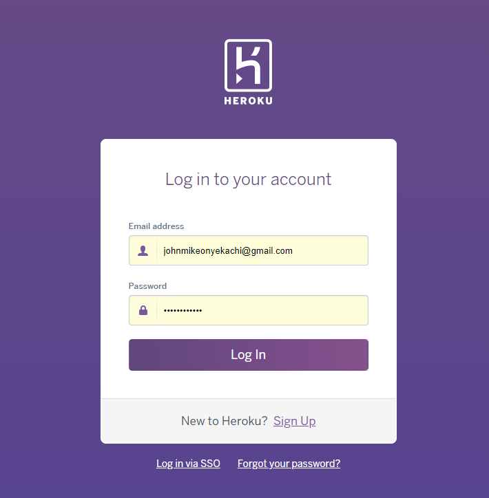
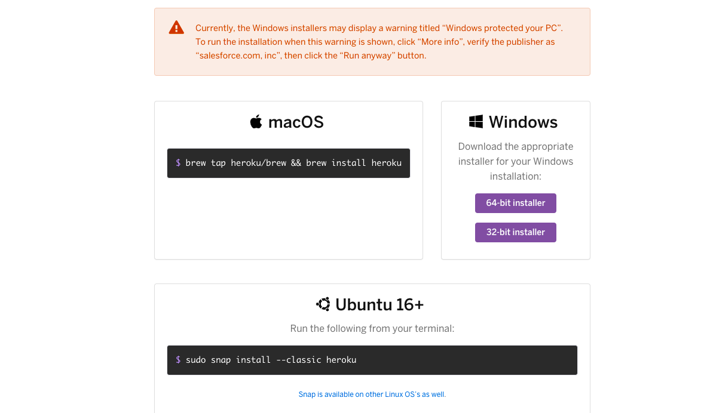

Deploy Django App on Heroku
What is heroku and why deploy on heroku?
Heroku is a container-based cloud Platform as a Service (PaaS). Read more on Heroku official website Most developers choose heroku for some notable reasons. Among these are:-
- Heroku is ideal when your budget is not very fat.
- When your business begins to test opportunities in the cloud.
- Heroku Supports Diverse Solutions.For this reason, Heroku is a polyglot platform. It lets the developer build, run, and scale applications in a similar manner across all programming languages.
- Heroku Dynos Enable Easy Development and Better Usability. All this means is that since Heroku manages and runs applications, there's no need to manage operating systems or other internal system configurations.
- Heroku Lets Developers Scale Applications Instantly. When the application can scale so easily, the user can always expect more speed when using that application. The simple way to scale applications makes working with Heroku easy and convenient.
Follow these simple steps to deply your django application on Heroku in 7 minutes
Step: 01
Visit Heroku official website and create a free acount or login if you already have an account
Step: 02
Visit https://git-scm.com/ and install git for your operating system
Step: 03
Visit https://devcenter.heroku.com/articles/heroku-cli and download heroku-cli for your operating system
Step: 04
Open your system terminal and cd to your project directory where youhave your manage.py file
heroku login
The above command will open a browser link for you to login with your heroku login credentials
Step: 05
git init
This command create a git repository for you
Step: 06
git add .
This command will add all files to the repo
Step: 07
git commit -m "first commit"
This coomand will commit all changes to your remote repository
Step: 08
Now we need to create an app. See the command below
heroku create djangoAppName
I used djangoAppName above to denote the name of my app. You can use any name of your choice but make sure it is unique ie does not already exists
Step: 09
heroku git:remote -a djangoAppName
Remember to use the app name your created in step 8
Step: 10
pip install waitress
What is waitress?
When you are running publicly, it is highly recommended not to use the development server as it is not meant for production. The development server is not efficient, stable, or secure. You can choose either to deploy it on a third-party host such as Heroku or self-host it with a standalone container. Waitress is one example of such a container that works for both Windows and Linux. Based on the official documentation, Waitress is meant to be Read more on the official documentation
Step: 11
Create a file in your project folder name Procfile. Inside it, write the snippets below.
web: waitress.server --port=$PORT YOUR_DJANGO_PROJECT_NAME.wsgi:application
Step: 12
Go to your project's seetings.py file and add the below code snippet
DEBUG = False
ALLOWED_HOSTS = [*] or ['appName.herokuapp.com', 'localhost']
['*'] from the snippets above matches anything while
Step: 13
pip install whitenoise
Step: 14
Open settings.py file and add the below middleware
'whitenoise.middleware.WhiteNoiseMiddleware'
The middleware should come immediately after django.middleware.security.SecurityMiddleware
Step: 15
Open the settings.py and add the below code
STATIC_ROOT = BASE_DIR/ "static"
Step: 16
Type the command below to create a requirements.txt file which creates all dependencies for your project
pip freeze > requirements.txt
Step: 17
Great effort! Time to deploy your app. Follow the steps below to commit all changes and deploy your app to heroku.
git add .
git commit -m "About to deploy on heroku"
git push heroku master
Congratulations!!! You just deployed your app on heroku
Go to heroku dashboard and open your application through the application link.
Happy coding...